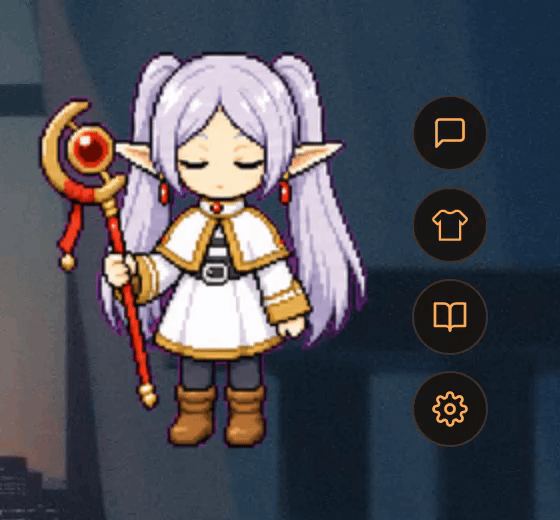
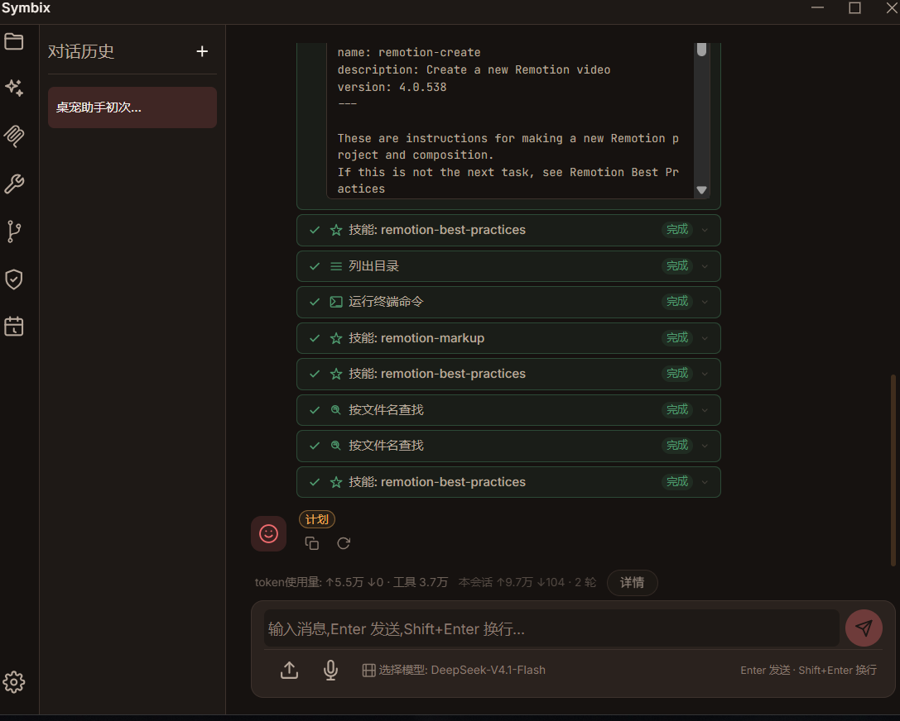
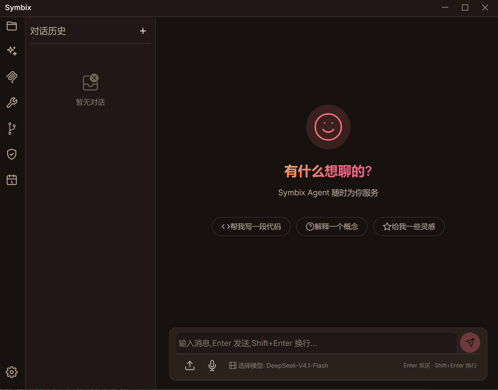
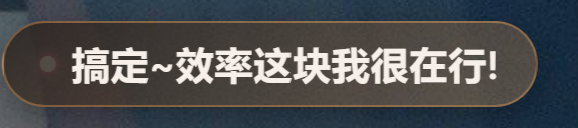
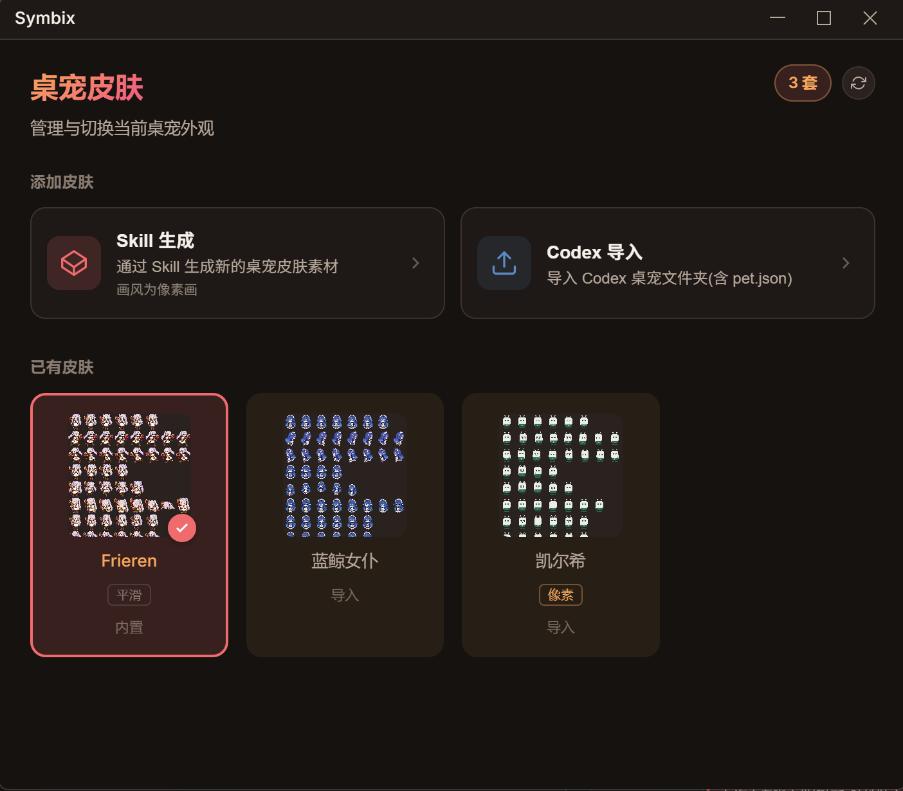
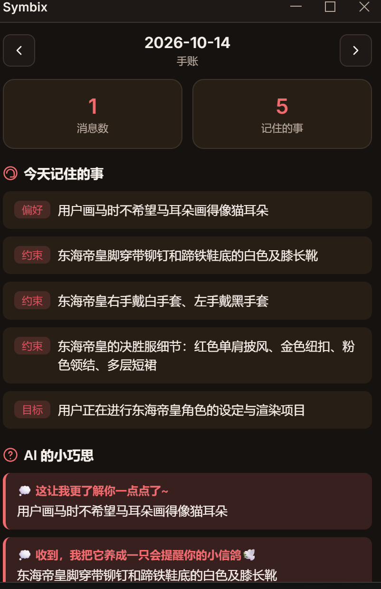
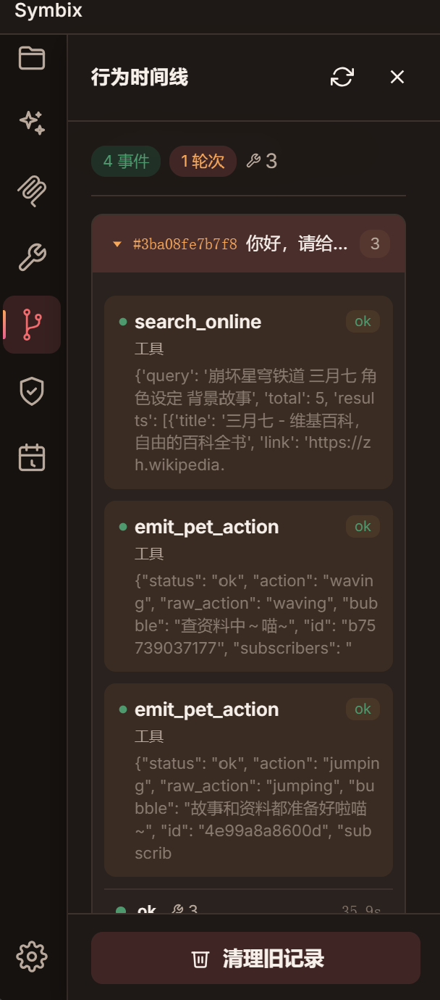
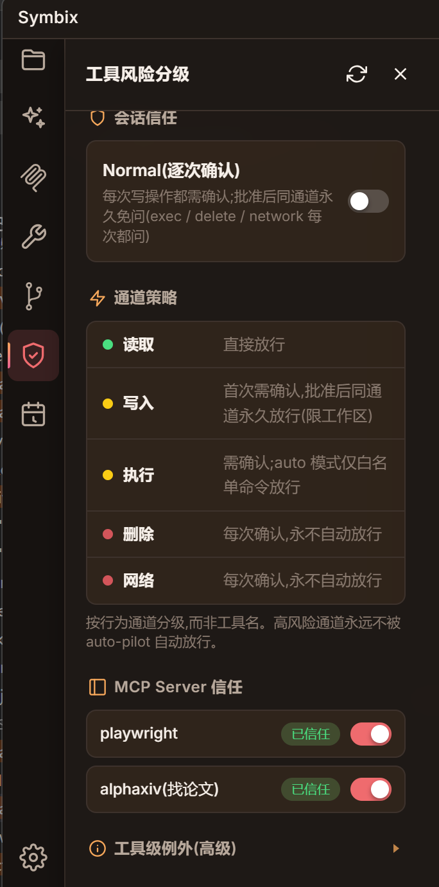

「帮我整理 XX 方向的近期工作」—— 你只管提需求和挑格式
陪伴与干活,同一只
直接给你排好版的 Word / PPT / Excel / PDF,拿到手就能发出去。
论文、报告、表格、讲义都读得懂,扫描件 PDF 也有 OCR 兜底;想变什么格式,一句话的事。
复杂任务先派多个分身并行推进再汇总;不是单线程聊天机器人。
多步任务先递计划等你点头;要动手改东西时弹审批卡,纯读取的自己跑。嫌确认烦?开 auto-pilot 一路绿灯。
每一步留痕,diff 一眼看清改了什么;改错一键还原,新建的文件也能撤。
调了哪个工具、入参是什么、拿回什么、耗时多久、为什么失败 —— 全摊在聊天流里,不是黑盒,出事对着看就能 debug。
长期记忆 + 每日手账,关掉再开还是它,不用每次从头交代。
「每天早上八点提醒我吃药」它就懂,跑失败自动重试并通知你。
描述想要的样子,它自己画形象、做动作、打包成能导入的桌宠皮肤。
每轮 token 用量实时显示,日 / 周 / 月汇总一张图表看尽。
语音识别跑在你自己电脑上,不联网不上传;朗读一句一句流着念。
31 个内置工具 + 技能包 + MCP 外部能力,接上什么它就是什么。
没事搭句话,一半概率翻你的记忆聊旧事;点一下气泡直接进聊天,它先开口、你来接。
常驻桌面、透明穿透、会跳会跑会冒气泡陪你。
桌宠、聊天、弹幕、手账 —— 都是常驻在你桌面上的真窗口








安装即用,语音识别模型与运行时都打包在内
| 平台 | 安装包 | 本地语音识别 |
|---|---|---|
| Windows x64 | .exe (NSIS) | ✅ |
| macOS Apple Silicon | .dmg | ✅ |
| Linux x64 | .deb | ✅ |
| macOS Intel | 暂不支持 | — |
所有对话与记忆都留在本地 —— Tauri 2 桌面壳 + FastAPI 后端 + 自研 Agent SDK